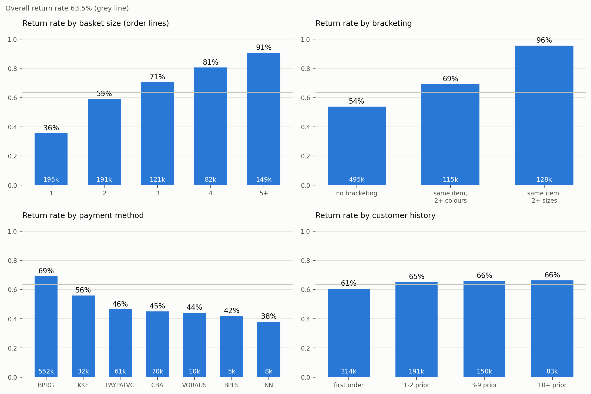
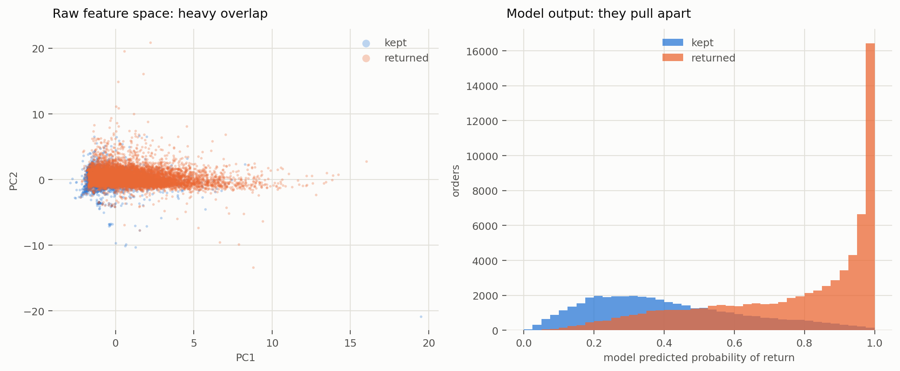
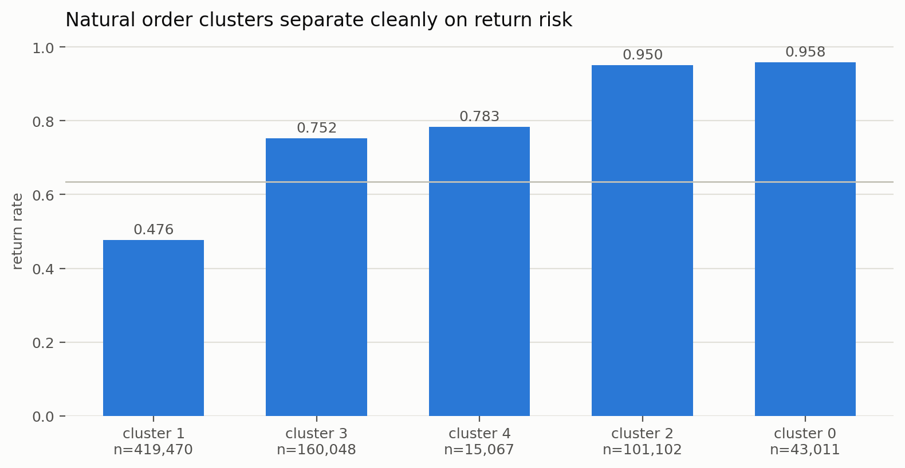
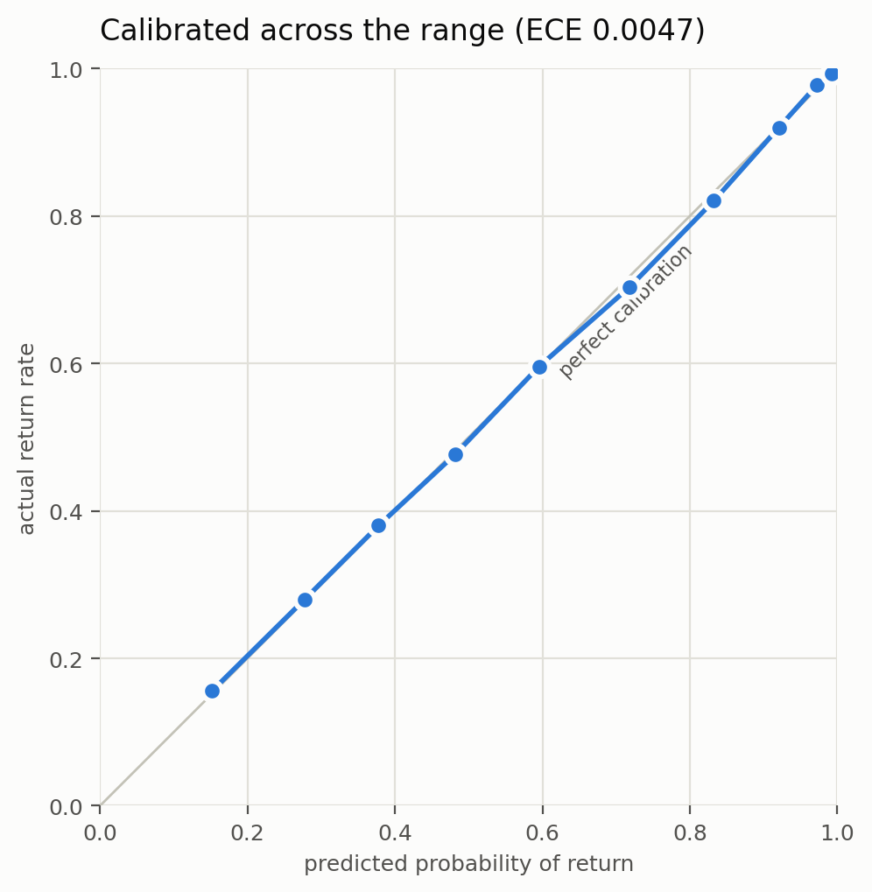
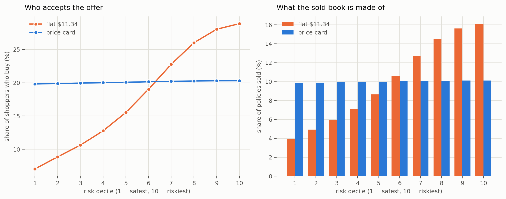

Morgan Cooper · how I approached pricing returns coverage, on 2.3M real order lines
Paid returns coverage is an insurance product sold at checkout, and it lives or dies on one number per order: how likely this order is to come back. If that number is trustworthy in absolute terms, not just good at ranking, the price follows from it. If it is not, every price is a guess.
I used the Data Mining Cup 2016 set: 2,325,165 order lines from an anonymised European fashion retailer. I chose it over the usual Kaggle options because it carries a real return label, so I would not spend this memo defending a proxy invented from review scores. Collapsing the lines gives 738,698 orders, labelled by whether anything came back, which is the unit a policy pays out on. This book returns 63.5% of orders, the global high-water mark for fashion, so every price below is also run at gentler return rates.
I trained on the 624,732 orders before 2015-07-01 and scored the 113,966 that followed, so the model is only ever predicting forward. Nothing a customer did after an order was placed is allowed to inform that order's features. I unit-tested the helper enforcing that against a hand-worked example, because my first version was silently wrong and still produced entirely plausible numbers.

Bracketing is the clearest signal in the dataset. When a shopper orders the same article in two or more sizes, something comes back 96% of the time, against 54% for orders with no bracketing at all. Nobody wears both. Basket size runs the same way: a single-line order returns 36% of the time, a five-line order 91%.
Payment method spreads thirty points top to bottom, almost certainly reflecting how committed the shopper is at checkout rather than anything about the payment rail itself. Customer history barely moves the needle on its own, and then turns out to be the strongest feature the model has. Worth knowing before anyone dismisses a feature for looking flat in isolation.


The left panel is the honest picture: no single view of the raw data pulls returns apart from keeps. The signal is real but only emerges once features are combined, which is what the model is for. That clustering finds a 48-point spread without ever seeing the outcome is good evidence the structure is in the data rather than invented by the model.
| Model | AUC | Log loss | Calibration error |
|---|---|---|---|
| Raw order attributes (baseline) | 0.7959 | 0.5218 | — |
| Logistic regression, all features | 0.8348 | 0.4819 | — |
| LightGBM, all features | 0.8526 | 0.4527 | 0.0047 |
| XGBoost, all features | 0.8528 | 0.4524 | 0.0050 |
Calibration error is 0.0047. The riskiest tenth of orders is predicted at 0.993 and comes back 0.994 of the time. This is the result the pricing rests on: quote someone 0.40 and they really do return 40% of the time, so that number can be turned into dollars without distortion.
XGBoost beats LightGBM by 0.0002, and the two agree on 99.8% of what they predict. More performance is not hiding in a different algorithm. Logistic regression gets within 0.018 of both, which says the engineered features are doing the work rather than the tree.

It is not uniformly good. Single-line orders score AUC 0.696 against 0.858 for multi-line, because with no basket to read it has only the customer's history to go on. Two small payment segments also drift far enough off calibration that I would recalibrate them before trusting their prices.
A return costs the platform $8 to ship back and process. Each shopper is then quoted their own expected cost, marked up to a target margin:
price = (probability of return × $8) ÷ (1 − margin)
Because the probability is trustworthy in absolute terms, this earns the target margin on every single order, the safest shopper and the riskiest alike. Nothing is tuned, and no assumption about shopper behaviour enters any number in this section. Against it, one flat rate covering the same book charges the average claim marked up the same way.
| Risk decile | Return probability | Expected claim | Price at 45% | Price at 60% |
|---|---|---|---|---|
| 1 (safest) | 0.15 | $1.89 | $3.44 | $4.73 |
| 3 | 0.38 | $3.52 | $6.40 | $8.80 |
| 5 | 0.60 | $5.09 | $9.25 | $12.72 |
| 8 | 0.92 | $7.43 | $13.51 | $18.57 |
| 10 (riskiest) | 0.99 | $7.95 | $14.45 | $19.87 |
One flat rate earning the same 45% on this book is $9.73 for everyone, and $13.38 at 60%. Both approaches earn exactly the target. The difference is not profitability, it is who pays what: half this book is quoted less than the single rate would charge them, and the other half is quoted what it actually costs.
| Return rate | Average claim | Flat rate for everyone | Risk-priced range | Shoppers paying less than flat |
|---|---|---|---|---|
| 10% | $1.52 | $2.76 | $1.47 – $8.92 | 8 in 10 |
| 20% | $2.24 | $4.07 | $1.53 – $12.28 | 7 in 10 |
| 30% | $2.96 | $5.38 | $1.66 – $13.58 | 6 in 10 |
| 63% (this book) | $5.35 | $9.73 | $3.44 – $14.45 | 5 in 10 |
The healthier the merchant, the more customers are better off. At a 10% return rate the risk sits in a small tail, so eight in ten shoppers are quoted below the flat rate and the tail pays what it genuinely costs. One further property holds at every rate: because each policy carries the target margin, a $100M book of coverage returns $45M of contribution at a 45% margin, whoever the buyers turn out to be.
Everything above comes from measured return outcomes. What no public dataset contains is who actually opts in at a given price, and that is the piece deciding how much of this reaches revenue. I modelled it, anchored at 35% of shoppers buying at $5. The figures in this section depend on that assumption and would move if it is wrong.
Under that model the effect is large and favourable. A flat rate is a bargain for the shopper who knows they will return and a bad deal for the one who knows they will not, so the book fills with claimants: buyers run +0.123 riskier than the population and cost $6.24 a policy to service. Quote everyone their own expected cost and that arbitrage disappears. Uptake lands between 19.8% and 20.3% across all ten risk deciles, the gap between buyers and everyone else collapses to +0.002, and servicing a policy gets 14% cheaper.

I would expect the direction to hold and the magnitude to differ. Redo can settle it in a way I cannot from public data, by measuring take-up at each quoted price instead of assuming a curve. That is most of the reason I would rather build this inside the company than outside it.
Measured from the data: every return outcome, all model results, the claim costs derived from them, and every price in the section above the divider. Assumed: that a return costs $8 to process, and the demand curve used only in the final section. Gentler return rates are modelled by shifting this book's probabilities down while preserving the model's ranking. Margin throughout is measured on revenue. Amounts in dollars; the source retailer is euro-denominated, treated 1:1. Code and notebooks: github.com/cooper-rm/ecommerce-returns-ml